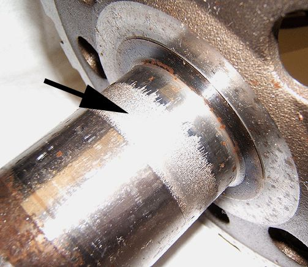
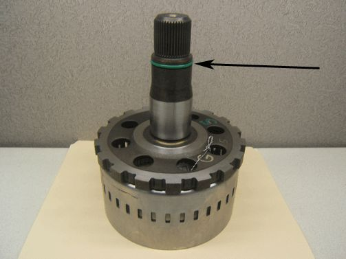
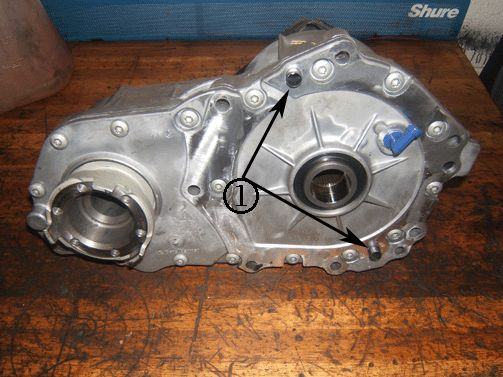
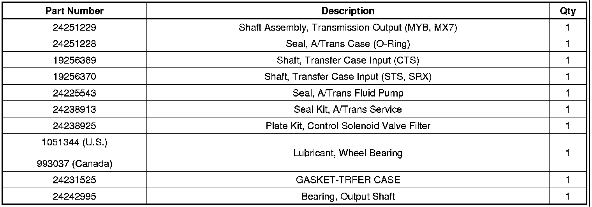

A/T - Rumble/Grind/Ticking Noise While Driving
TECHNICALBulletin No.: 09-07-30-014A
Date: August 02, 2010
Subject: Rumble, Grind, Ticking or Rattle Type Noise While Driving, Output Shaft Spalling (Replace Output Shaft and Bearing)
Models:
2006-2009 Cadillac SRX, STS
2008-2009 Cadillac CTS
Equipped with All-Wheel Drive (MX7) and 6L50 Automatic Transmission (RPO MYB)
Supercede:
This bulletin is being revised to update the information and revise a bulletin reference. Please discard Corporate Bulletin Number 09-07-30-014 (Section 07 - Transmission).
Condition
Some customers may comment on a rumble, growl, ticking or rattle type noise that is heard while driving.
Cause

This condition may be caused by a spalled or worn transmission output shaft (499) in the area where the output shaft bearing (41) contacts the output shaft.
Correction
Replace the output shaft bearing with an updated bearing available from GM CC&A.

A revised transmission output shaft with an O-ring (1) is now available. The transmission output shaft and the transfer case input shaft should be replaced. Typically, there are no damaged internal parts in either the transmission or transfer case. Refer to Transmission Removal (All-Wheel Drive), Output Shaft Removal (6L50) and Transfer Case Assemble in SI.
Important
After repairs, when installing the transfer case to the transmission, make sure to grease the transmission output shaft splines with high-temperature wheel bearing grease, P/N 1051344 (Canadian P/N 993037).

Important
Verify that the two locating (alignment) pins are pressed into the transfer case as they may stick in the transmission during transfer case removal. If these pins are not in the proper location in the transfer case, proper alignment of the transfer case to transmission is not maintained and damage may result.
Parts Information

Warranty Information

For vehicles repaired under warranty, use the table.

Disclaimer